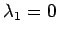
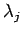
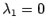
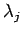
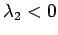
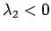

Inhalt Index DeskTop Bronstein

 Dynamische Systeme und Chaos Bifurkationstheorie, Wege zum Chaos Bifurkationen in Morse-Smale-Systemen Lokale Bifurkationen nahe Ruhelagen
Dynamische Systeme und Chaos Bifurkationstheorie, Wege zum Chaos Bifurkationen in Morse-Smale-Systemen Lokale Bifurkationen nahe Ruhelagen


Gegeben sei die Differentialgleichung (17.17) mit und  . Die JACOBI-Matrix Dxf(0,0) habe den Eigenwert  und n-1 Eigenwerte  mit Re. Für die reduzierte Differentialgleichung (17.19) gelte und . Die TAYLOR-Zerlegung von F nahe (0,0) führt auf die verkürzte Normalform (ohne Glieder höherer Ordnung, s. Lit. 17.1)
. Die JACOBI-Matrix Dxf(0,0) habe den Eigenwert  und n-1 Eigenwerte  mit Re. Für die reduzierte Differentialgleichung (17.19) gelte und . Die TAYLOR-Zerlegung von F nahe (0,0) führt auf die verkürzte Normalform (ohne Glieder höherer Ordnung, s. Lit. 17.1)
mit den Parametern  und . Die Menge
und . Die Menge  stellt im erweiterten Phasenraum eine Fläche dar und wird Falte genannt (s. Abbildung).
stellt im erweiterten Phasenraum eine Fläche dar und wird Falte genannt (s. Abbildung).
Im weiteren sei . Die nicht hyperbolischen Ruhelagen von (17.26) werden durch das Gleichungssystem definiert und liegen auf den Kurven S1 und , die durch die Menge bestimmt werden und zusammen eine Spitze (cusp) bilden (s. linke Abbildung.).
Bei ist die Ruhelage 0 von (17.26) stabil. Das Phasenporträt von (17.17) nahe  , z.B. für und ist für  ein dreifach zusammengesetzter Knoten (s. mittlere Abbildung) und für ein dreifach zusammengesetzter Sattel (s. rechte Abbildung) (s. auch Lit. 17.13).
, z.B. für und ist für  ein dreifach zusammengesetzter Knoten (s. mittlere Abbildung) und für ein dreifach zusammengesetzter Sattel (s. rechte Abbildung) (s. auch Lit. 17.13).
Beim Übergang von in das Innere des Gebietes 1 (s. linke Abbildung) spaltet sich die nicht hyperbolische Ruhelage 0 von (17.17) vom Typ eines zusammengesetzten Knotens in drei hyperbolische Ruhelagen (zwei stabile Knoten und ein Sattel) auf (superkritische Gabel-Bifurkation). Im Falle des zweidimensionalen Phasenraumes von (17.17) sind die Phasenporträts in der mittleren und rechten Abbildung zu sehen.
Beim Durchqueren des Parameterpaares von  aus 1 in 2 bildet sich eine zweifach zusammengesetzte Ruhelage vom Sattelknoten-Typ, die sich anschließend aufhebt. Eine stabile hyperbolische Ruhelage verbleibt.
aus 1 in 2 bildet sich eine zweifach zusammengesetzte Ruhelage vom Sattelknoten-Typ, die sich anschließend aufhebt. Eine stabile hyperbolische Ruhelage verbleibt.
Für (17.17) gelte , und die Matrix Dxf(0,0) habe die beiden Eigenwerte  und n-2 Eigenwerte mit Re. Die reduzierte zweidimensionale Differentialgleichung (17.19) sei topologisch äquivalent zum ebenen System
und n-2 Eigenwerte mit Re. Die reduzierte zweidimensionale Differentialgleichung (17.19) sei topologisch äquivalent zum ebenen System
| (17.71) |
Dann findet auf der Kurve eine Sattelknoten-Bifurkation statt. Auf entsteht beim Übergang aus dem Gebiet in das Gebiet durch eine HOPF-Bifurkation ein stabiler Grenzzyklus und auf existiert für das Ausgangssystem eine Separatrixschleife (s. Abbildung), die im Gebiet 3 in einen stabilen Grenzzyklus bifurkiert (s. Lit. 17.1, 17.17).
Diese Bifurkation ist von globaler Natur und wird als Entstehung eines einzigen periodischen Orbits aus dem homoklinen Orbit eines Sattels oder Auflösung einer Separatrixschleife bezeichnet.
Für (17.17) seien die Voraussetzungen der HOPF-Bifurkation mit erfüllt und die zweidimensionale reduzierte Differentialgleichung habe nach einer Koordinatentransformation in Polarkoordinaten die Normalform . Das Bifurkationsdiagramm (s. Abbildung) dieses Systems enthält die Linie , deren Punkte HOPF-Bifurkationen repräsentieren (s. Lit. 17.1).
Im Gebiet 3 existieren zwei periodische Orbits, von denen einer stabil, der andere instabil ist. Auf der Kurve verschmelzen diese beiden nicht hyperbolischen Zyklen in einen zusammengesetzten Zyklus, der im Gebiet 2 verschwindet.